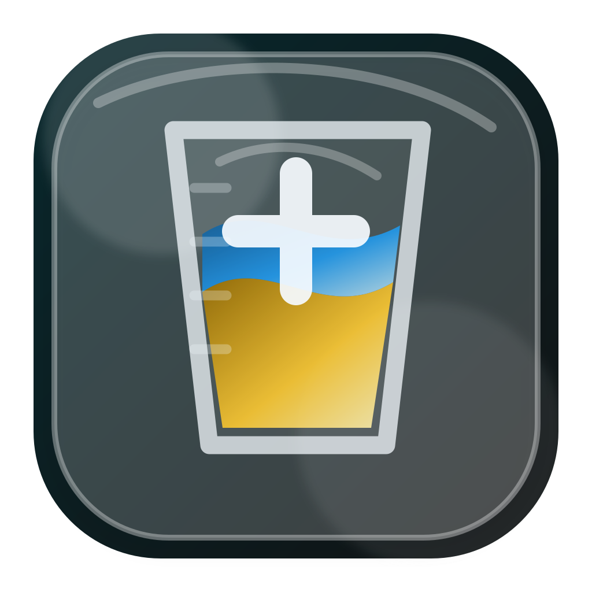
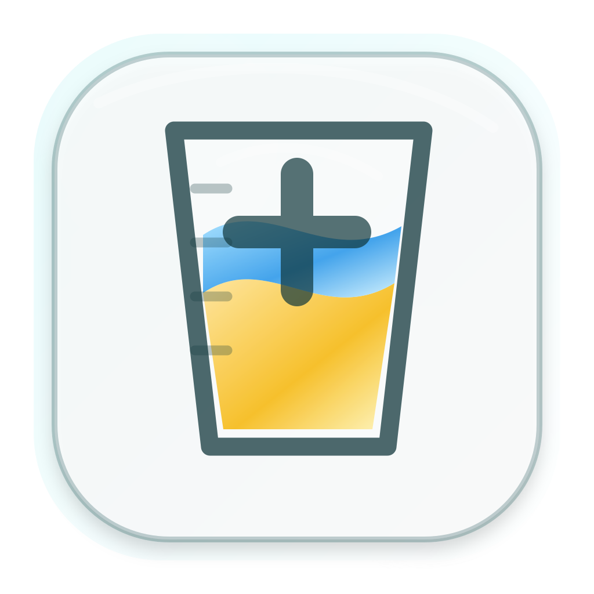
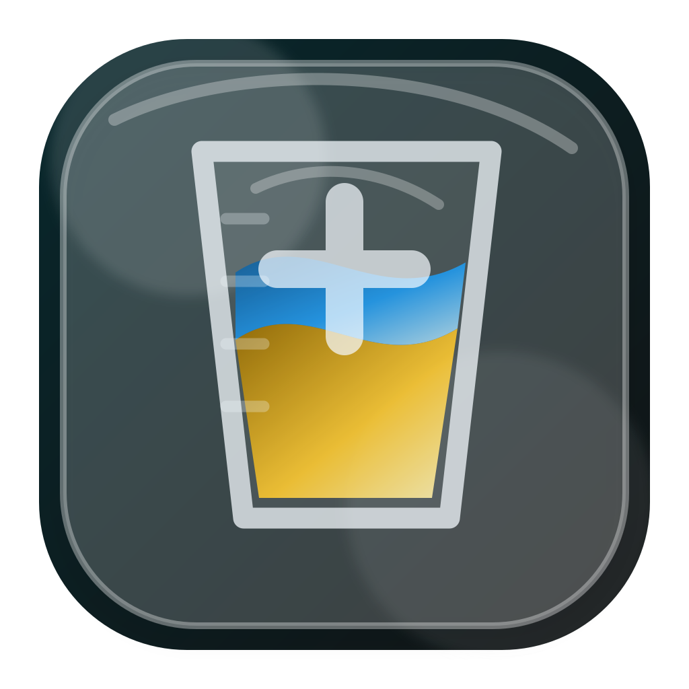
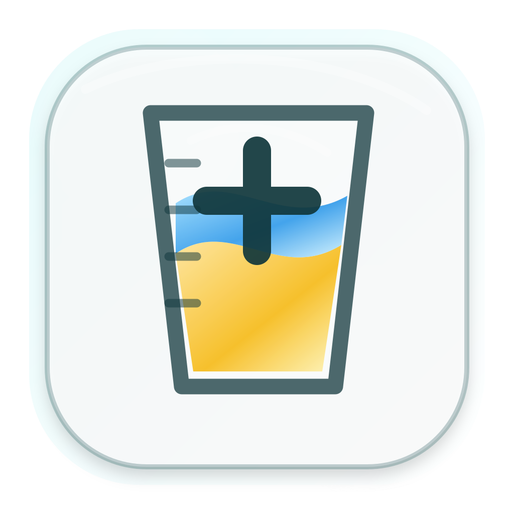
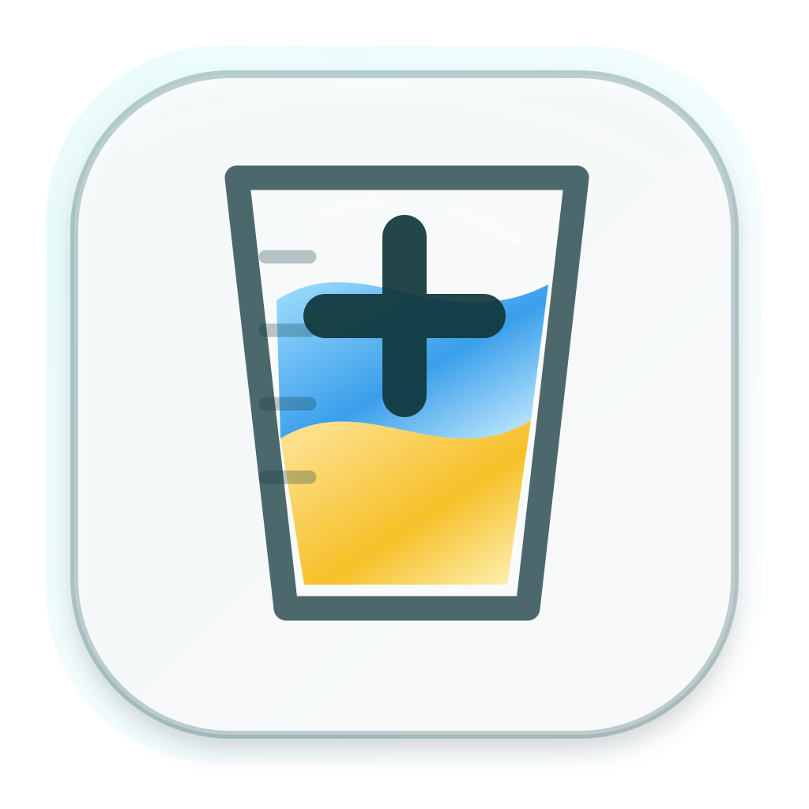
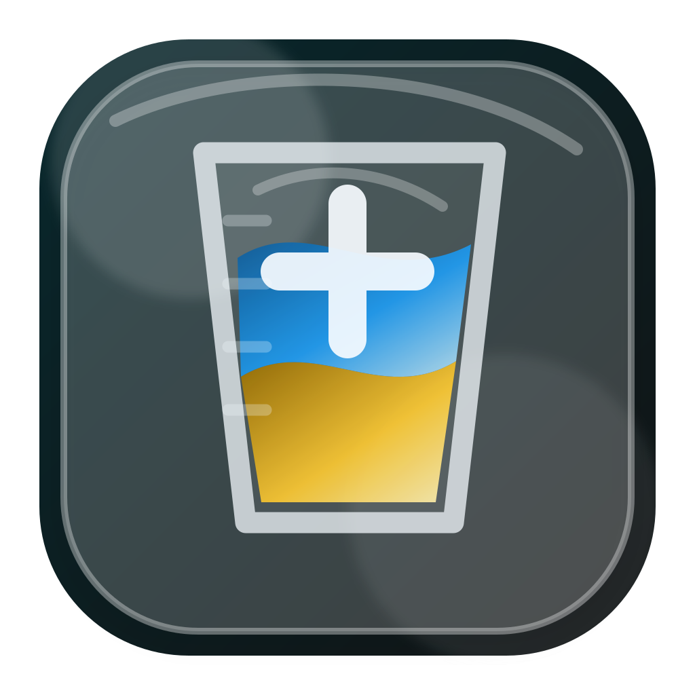
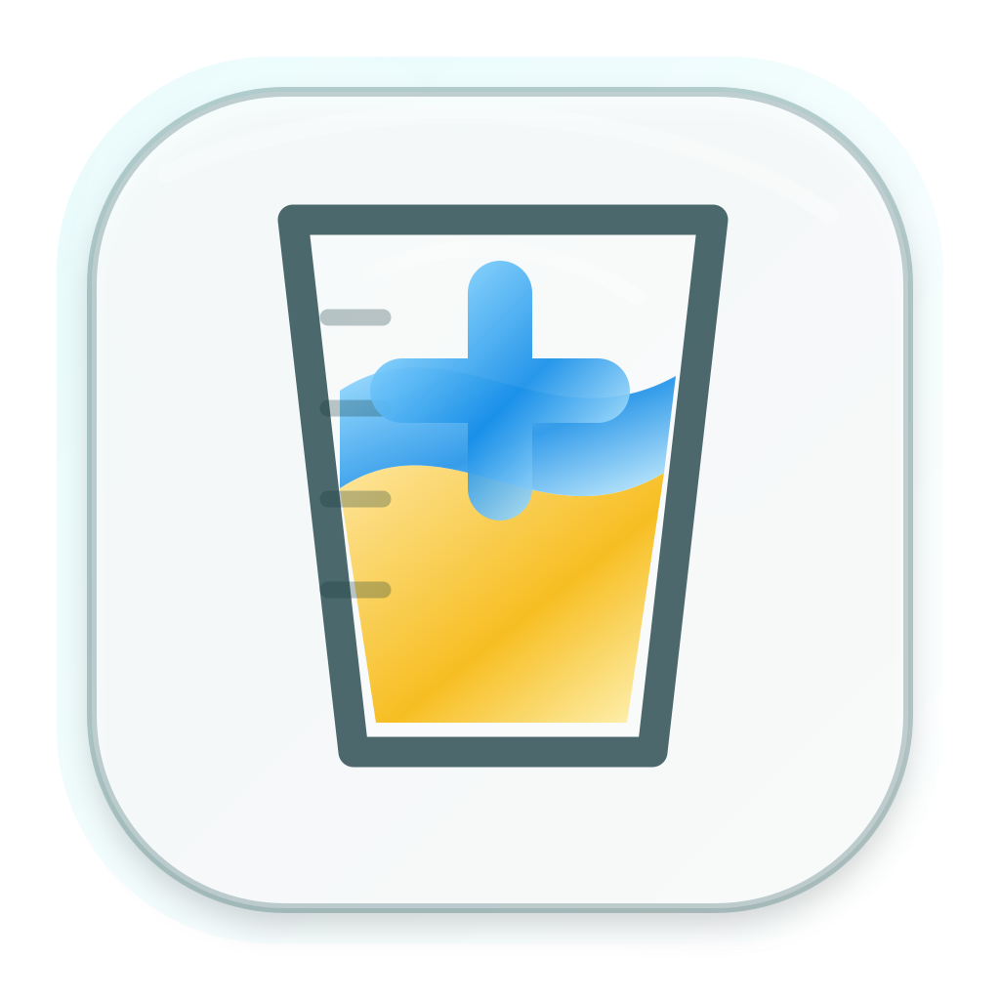
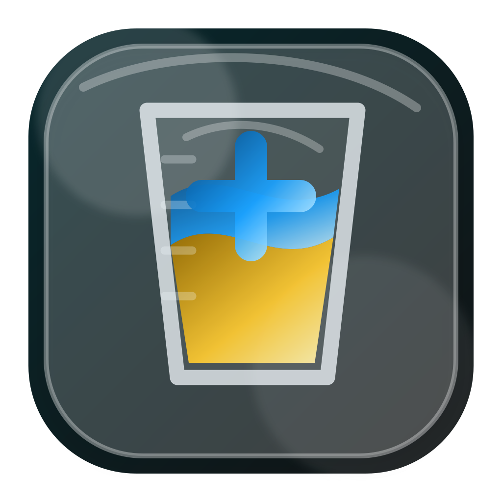

21A. Becher Plus Klar · mehr Füllstand
21 als Basis, aber mit hoeherem zweifarbigem Füllstand wie bei 23.
Varianten von 21 mit mehr Füllstand wie bei 23. Links Light, rechts Dark.

21 als Basis, aber mit hoeherem zweifarbigem Füllstand wie bei 23.


Mehr Füllstand, aber weniger dominantem Plus.

Mehr Füllstand mit deutlicher ml-Skala.


Mehr Füllstand mit sichtbarer Wasser- und Urinschicht.


Mehr Kontrast und kräftigeres Plus fuer Dock-Erkennbarkeit.